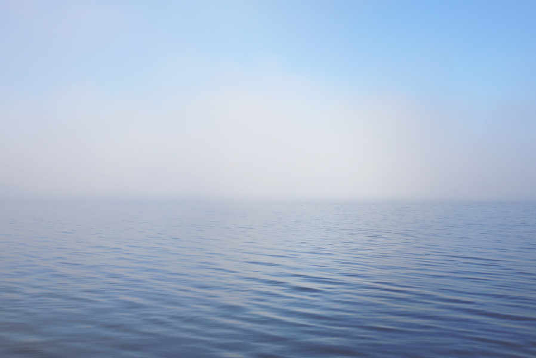

A meditation and dharma community · Brookfield + online
You are not a problem to solve.
Practice is learning to meet this life—your actual life—with a steadier mind, an open heart, and the courage to see clearly.
What we practice here
- 01
Pay attention to what is actually here.
- 02
Meet it without abandoning yourself or others.
- 03
Respond with more wisdom, freedom, and care.
What do you need today?
You don’t need to understand every program or know where you belong. Start with the need you can name.
I need somewhere to land.
A gentle first gathering, guided meditation, and no pressure to speak.
GuidanceI want to learn how to meditate.
Clear instruction, practical teaching, and room to ask the questions you really have.
CompanyI don’t want to do this alone.
A community of ordinary people practicing through joy, grief, change, and daily life.
DepthI’m ready to go further.
Courses, sustained study, silent practice, and a tradition deep enough to keep opening.
A good place to begin
Meditation & Dharma Talk
We’ll sit together, hear a practical teaching, and leave time for questions. Some people come every week. Others are walking in for the first time.
Plan your first visit
If this is your first time
You can simply show up.
Wear something comfortable. Sit in a chair or on a cushion. Keep your camera off online. Listen without speaking. Leave early if you need to. The practice is invitational.
- Someone will welcome you and help you get settled.
- You will never be asked to claim a religious identity.
- There is no admission price or required donation.
- You do not have to feel calm, spiritual, or “good at this.”
August 3–9 · Central time
This week at RIM.
What people find here
“After the first drop-in session, I knew I was home. The warm, welcoming, engaging community was where I wanted to grow my practice.”
For beginners · For lifelong practitioners
Ancient roots. No spiritual theater.
RIM is grounded in the earliest Buddhist teachings and the Chan practice of Silent Illumination. We study them closely and teach them plainly—because the point is not to collect ideas. The point is to live with less confusion and more care.
Experienced practitioners will find serious study, silent sits, courses, and opportunities to make practice inseparable from service and community.
“The teaching is here to support your practice—not to stand between you and it.”
Dana · Generosity
What is freely offered is freely supported.
There are no fees for RIM’s regular gatherings. Teachers offer the dharma, and the community responds according to its ability—with donations, volunteering, care, and participation. This is how the door stays open for everyone.
Come as you are
One hour is enough to begin.
Come to a drop-in. Sit with us. Ask a question or stay quiet. Notice what happens when you don’t have to do it alone.